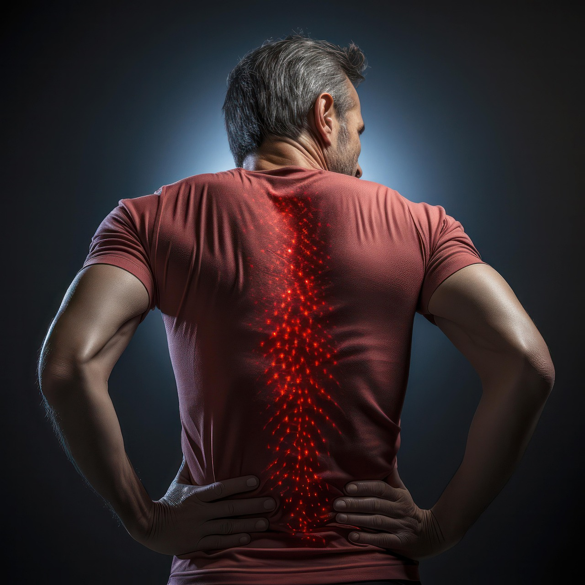

Back Pain: Understanding and Care
Okay, let's have a brief discussion about back pain, covering its common causes and general approaches to care. Remember, this is for general knowledge and does not substitute professional medical advice. If you're experiencing significant or persistent back pain, consulting a doctor for a proper diagnosis and treatment plan is crucial.
Back Pain: A Brief Discussion
Back pain is an incredibly common ailment, affecting most people at some point in their lives. It's a leading cause of disability worldwide and can range from a mild, dull ache to sharp, debilitating pain. Understanding the potential causes and general approaches to care can be helpful.
Common Causes of Back Pain
Back pain can arise from a variety of factors, often interconnected. Here are some of the most frequent culprits:
Musculoskeletal Issues (Mechanical Back Pain)
This is the most common type and often relates to the muscles, ligaments, joints, and discs in the back.
- Muscle Strain or Ligament Sprain: Overexertion, improper lifting, sudden awkward movements, or sports injuries can stretch or tear these soft tissues.
- Degenerative Disc Disease: As we age, the intervertebral discs can lose hydration and become less spongy, leading to pain and stiffness.
- Herniated or Bulging Discs: The soft inner core of a disc can protrude through the outer layer, potentially pressing on nearby nerves.
- Spinal Stenosis: Narrowing of the spinal canal can compress the spinal cord and nerves, often causing pain in the legs that worsens with standing or walking.
- Osteoarthritis: Wear and tear on the facet joints (small joints in the spine) can lead to inflammation and pain.
- Spondylolisthesis: A condition where one vertebra slips forward over the one below it, potentially causing nerve compression.
Other Contributing Factors
- Poor Posture and Body Mechanics: Slouching, incorrect sitting or standing habits, and improper lifting techniques can put undue stress on the back.
- Obesity: Excess weight can strain the back muscles and discs.
- Lack of Exercise: Weak core and back muscles can provide insufficient support for the spine, making it more susceptible to injury and pain.
- Psychological Factors: Stress, anxiety, and depression can contribute to or worsen back pain. Muscle tension related to stress can be a significant factor.
Less Common but Serious Causes
While less frequent, back pain can sometimes be a symptom of more serious underlying conditions like:
- Infections: Spinal infections can cause severe back pain.
- Tumors: Tumors in the spine can compress nerves or the spinal cord.
- Inflammatory Conditions: Conditions like ankylosing spondylitis can cause chronic back pain and stiffness.
- Fractures: Vertebral fractures, often due to trauma or osteoporosis, can cause sudden and severe pain.
- Cauda Equina Syndrome: A rare but serious condition involving compression of the nerves at the base of the spinal cord, requiring immediate medical attention.
General Approaches to Care and Management
The "cure" for back pain depends heavily on the underlying cause. For many cases of acute (short-term) back pain, self-care measures can be effective. For chronic or more severe pain, a multidisciplinary approach may be necessary. Here are some general strategies:
Self-Care and Lifestyle Adjustments
- Rest and Activity Modification: While prolonged bed rest is generally not recommended, temporarily avoiding activities that aggravate the pain is important. Gradually returning to normal activities as tolerated is key.
- Pain Relief Medications:
- Over-the-counter (OTC) pain relievers: Nonsteroidal anti-inflammatory drugs (NSAIDs) like ibuprofen and naproxen, as well as acetaminophen, can help reduce pain and inflammation.
- Muscle relaxants: May be prescribed for muscle spasms.
- Prescription pain medications: Stronger pain relievers, such as opioids, may be used for severe acute pain but are generally not recommended for long-term chronic pain due to the risk of dependence and side effects.
- Heat and Cold Therapy: Applying ice packs during the initial 24-48 hours can help reduce inflammation. After that, heat packs or warm baths can help relax muscles and increase blood flow.
- Maintain a healthy weight: Reducing excess weight can decrease strain on the back.
- Regular exercise: Strengthening core and back muscles is crucial for long-term back health.
- Practice good posture and body mechanics: Be mindful of how you sit, stand, lift, and move.
- Manage stress: Techniques like yoga, meditation, and deep breathing can help reduce muscle tension.
- Quit smoking: Smoking can impair blood flow to the spine and hinder healing.
Professional Treatments
- Physical Therapy: A physical therapist can teach exercises to improve posture, strengthen core and back muscles, increase flexibility and range of motion, and promote proper body mechanics.
- Manual Therapy: Techniques like massage, spinal manipulation (chiropractic or osteopathic adjustments), and mobilization can help relieve pain and improve spinal function.
- Injections: In some cases, doctors may recommend injections, such as epidural steroid injections, nerve blocks, or facet joint injections, to reduce pain and inflammation. These are often used in conjunction with other therapies.
- Surgery: Surgery is typically reserved for cases where conservative treatments have failed and there is a clear structural problem causing significant pain or neurological symptoms (e.g., severe nerve compression from a herniated disc or spinal stenosis).
Brief Discussion
Back pain is often multifactorial, meaning it can result from a combination of physical, lifestyle, and even psychological factors. While many episodes of acute back pain resolve within a few weeks with self-care, chronic back pain (lasting longer than three months) can be more complex and require a more comprehensive management plan.
It's important to be an active participant in your care. Understanding your symptoms, communicating effectively with healthcare providers, and adhering to recommended treatments are crucial for recovery and preventing future episodes.
When to Seek Professional Medical Advice
- Severe back pain that doesn't improve with home care.
- Pain that radiates down your leg (sciatica), especially below the knee.
- Numbness, tingling, or weakness in your legs or feet.
- Bowel or bladder problems.
- Fever, unexplained weight loss, or a history of cancer.
- Back pain following a significant injury.
Remember, early diagnosis and appropriate management are key to effectively addressing back pain and improving your quality of life.